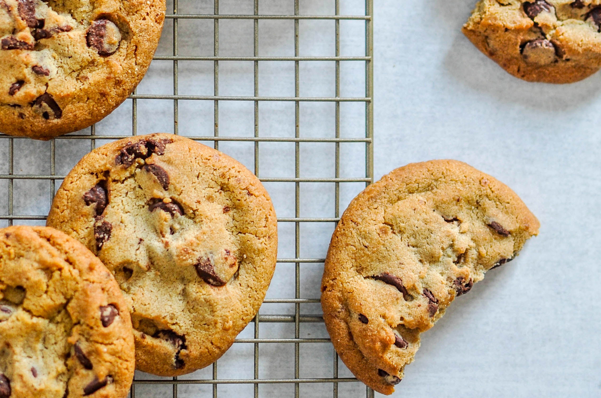
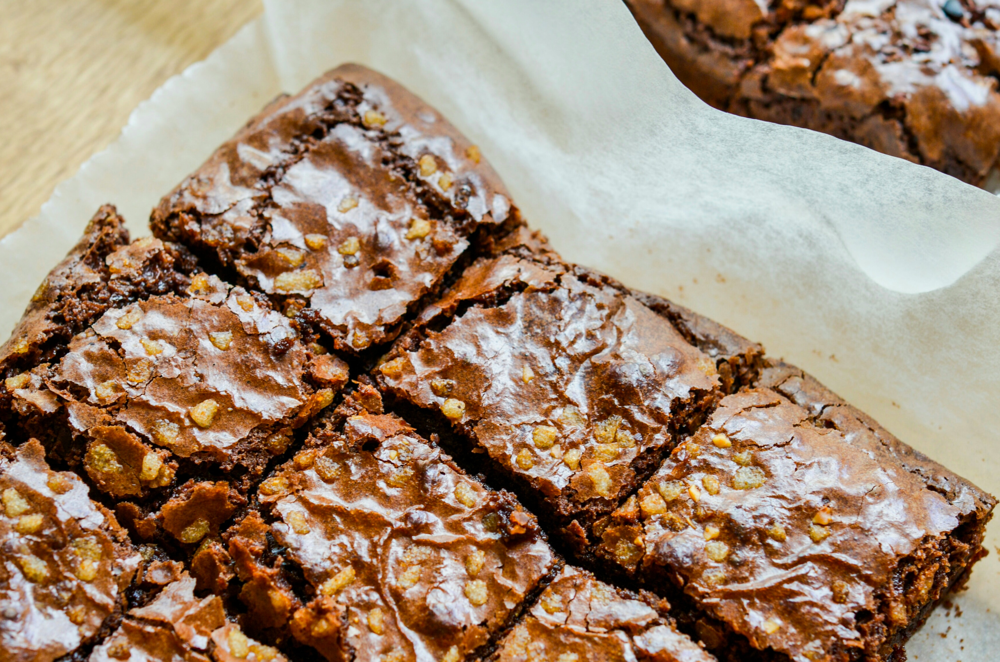

Chocolate Chip Cookie
Serves 15 | Prep time 20 minutes | Cook time 15 minutes

Ingredients
150g (5½ oz) butter
½ cup (100g, 3½ oz) caster sugar
½ cup (80g, 3oz) packed brown sugar
1 tsp vanilla extract
1 egg
1¾ cups (215g, 7oz) plain flour
½ cup (85g, 3oz) dark chocolate chips
½ cup (85g, 3oz) milk chocolate chips
Method
- Preheat the oven to 180oC (350oF, Gas Mark 4). Line some baking trays with greaseproof paper.
- In a bowl or electric mixer, cream the butter and sugar until the colour is pale yellow and the texture is fluffy. Add the egg and beat until combined.
- Add the flour in 2 parts and mix well after each addition. Then add in the chocolate chips and mix until evenly distributed in the dough.
- Using a spoon or a small ice cream scoop, divide the dough on the prepared trays evenly and leave some room between each one. Flatten them slightly.
- Bake them for 15 minutes or until golden brown. Leave them to cool slightly before removing them from the trays and cool completely on wire racks. These can be stored for up to 1 week in an airtight container.
Fudgy Brownies
|
Gingerbread Men
|
Back to Top
Fudgy Brownies
Serves 16 | Prep time 15 minutes | Cook time 35 minutes

Ingredients
300g (10oz) dark chocolate, chopped coarsely
3 tbsp cocoa powder
280 (8oz) butter
1 cup (220g, 8oz) sugar
1 cup (155g, 5oz) packed brown sugar
1 tbsp vanilla extract
1 tsp salt
1 tsp instant coffee
4 eggs
1 cup (125g, 4oz) plain flour
½ cup (85g, 3oz) dark chocolate chips
½ cup (85g, 3oz) milk chocolate chips
Method
- Preheat the oven to 180oC (350oF, Gas Mark 4). Grease a 23cm (9 inch) square tin and line with greaseproof paper. You can do this by rubbing the sides in vegetable oil or butter with a paper towel or a pastry brush.
- In a heatproof bowl such as glass, combine the chopped dark chocolate, cocoa powder and butter and set the bowl over a saucepan of simmering water to create a double boiler. It is important that the bottom of the bowl does not touch the water when melting the chocolate. Stir until a smooth ganache forms and set aside ½ cup (125ml, 4fl oz) of the ganache to decorate the brownies later.
- In another bowl, mix both the sugars, vanilla extract, salt, coffee and eggs together until well combined. Slowly add the chocolate mixture to the egg mixture and beat until smooth.
- Add the flour to the chocolate mixture and fold them until well combined. You can do this with a wooden or rubber spatula by cutting through the mixture several times. Then scrape the bottom of the bowl and 'flip over' the mixture and repeat.
- Add the dark and milk chocolate chips to the batter and mix until evenly distributed and then pour the batter into the prepared tin. Tap the tin on a flat surface several times to get rid of air bubbles.
- Bake for 35 minutes or until just set. Leave the brownies in the tin to cool completely before removing it from the tin.
- Drizzle the brownies with the reserved ganache and cut into 16 squares before serving.
Chocolate Chip Cookie
|
Gingerbread Men
|
Back to Top
Gingerbread Men
Serves 30 | Prep time 25 minutes (plus chilling) | Cook time 1 hour

Ingredients
125g (4oz) butter
⅔ cup (100g, 3oz) packed brown sugar
¼ cup (60ml, 2fl oz) maple syrup
1 egg, lightly beaten
2½ cups (310g, 10oz) plain flour
½ tsp baking soda
1 tbsp ground ginger
2 tsp ground cinnamon
2 cups (340g, 12oz) white chocolate melts, to decorate
1 cup (170g, 6oz) dark chocolate melts, to decorate
Method
- Preheat the oven to 180oC (350oF, Gas Mark 4). Line some baking trays with greaseproof paper.
- In a bowl or electric mixer, cream the butter and sugar until the colour is pale yellow and the texture is fluffy. Add the maple syrup and egg and beat to combine.
- Sift the flour, baking soda, ground ginger and ground cinnamon into the mixture with a large mesh sieve, and beat until a soft dough is formed and the ingredients are combined.
- Transfer the dough onto a lightly floured surface such as a silicone mat and knead the dough gently until it is smooth. To knead, just push it down and out with the heels of your hands. Then fold the dough over in half toward you, rotate about 45 degrees and repeat. If the dough gets sticky, sprinkle a bit of flour over it.
- Shape the dough into a rough disk once it has been kneaded and wrap it in plastic wrap. Let it rest in the fridge for 1 hour.
- Take the dough out and roll it out to a thickness of about 5mm (¼ inch). Cut out shapes in the dough using cookie cutters and place them on the lined baking trays. They should be about 2cm (1 inch) apart. Continue filling up the baking trays. Leftover dough can be rolled out again to make new ones.
- Bake one tray at a time for 20 minutes each, or until it is firm. Leave them to cool slightly before removing them from the trays and cool completely on wire racks.
- Melt the chocolate separately in a microwave in short bursts of 20 seconds, or in a small saucepan over a low heat until it is smooth. Spoon them into piping bags and decorate the gingerbread men with it. Allow about 10 minutes for the chocolate to set before serving.
Chocolate Chip Cookie
|
Fudgy Brownies
|
Back to Top